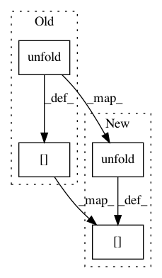

a5bd6a5eb3b78fe02c34de7db53efe253e85ecb9,tensorly/regression/tucker_regression.py,TuckerRegressor,fit,#TuckerRegressor#Any#Any#,55
Before Change
phi = partial_tensor_to_vec(
T.dot(partial_unfold(X, i),
T.dot(kronecker(W, skip_matrix=i),
unfold(G, i).T)))
// Regress phi on y: we could call a package here, e.g. scikit-learn
inv_term = T.dot(phi.T, phi) + self.reg_W * T.tensor(np.eye(phi.shape[1]))
W_i = vec_to_tensor(T.solve(inv_term, T.dot(phi.T, y)),
(X.shape[i + 1], G.shape[i]))
W[i] = W_i
phi = T.dot(partial_tensor_to_vec(X), kronecker(W))
G = vec_to_tensor(T.solve(T.dot(phi.T, phi) + self.reg_W * T.tensor(np.eye(phi.shape[1])), T.dot(phi.T, y)), G.shape)
After Change
phi = partial_tensor_to_vec(
T.dot(partial_unfold(X, i),
T.dot(kronecker(W, skip_matrix=i),
T.transpose(unfold(G, i)))))
// Regress phi on y: we could call a package here, e.g. scikit-learn
inv_term = T.dot(T.transpose(phi), phi) + self.reg_W * T.tensor(np.eye(phi.shape[1]))
W_i = vec_to_tensor(T.solve(inv_term, T.dot(T.transpose(phi), y)),
(X.shape[i + 1], G.shape[i]))
W[i] = W_i
phi = T.dot(partial_tensor_to_vec(X), kronecker(W))
G = vec_to_tensor(T.solve(T.dot(T.transpose(phi), phi) + self.reg_W * T.tensor(np.eye(phi.shape[1])), T.dot(T.transpose(phi), y)), G.shape)
In pattern: SUPERPATTERN
Frequency: 3
Non-data size: 4
Instances
Project Name: tensorly/tensorly
Commit Name: a5bd6a5eb3b78fe02c34de7db53efe253e85ecb9
Time: 2017-09-09
Author: jean.kossaifi@gmail.com
File Name: tensorly/regression/tucker_regression.py
Class Name: TuckerRegressor
Method Name: fit
Project Name: tensorly/tensorly
Commit Name: a5bd6a5eb3b78fe02c34de7db53efe253e85ecb9
Time: 2017-09-09
Author: jean.kossaifi@gmail.com
File Name: tensorly/decomposition/_tucker.py
Class Name:
Method Name: non_negative_tucker
Project Name: tensorly/tensorly
Commit Name: 0bbba71ed7fa78c58e3c82d7e32626bc7af3f94f
Time: 2018-11-26
Author: asmeurer@gmail.com
File Name: tensorly/decomposition/candecomp_parafac.py
Class Name:
Method Name: parafac